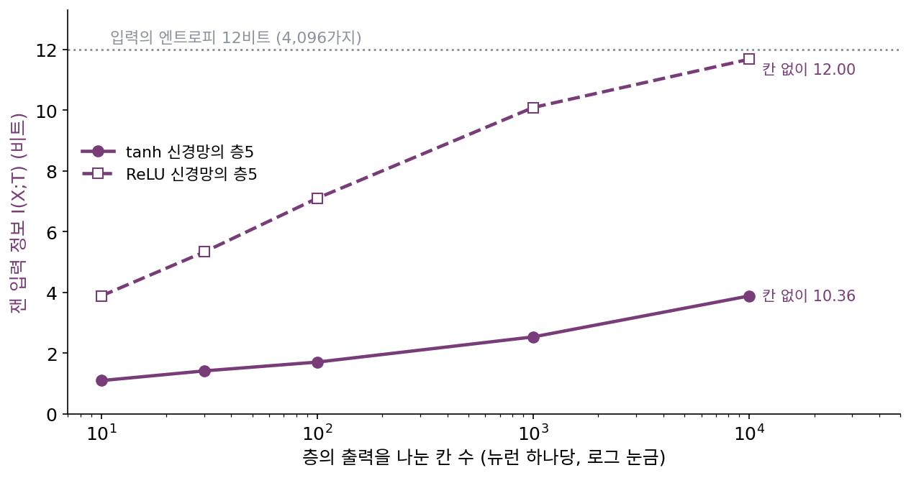
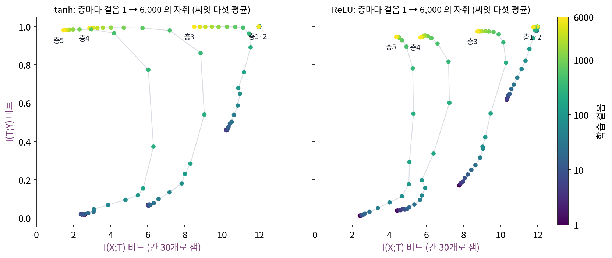
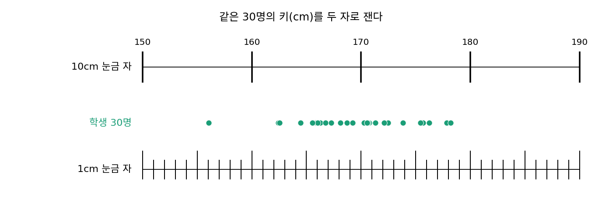
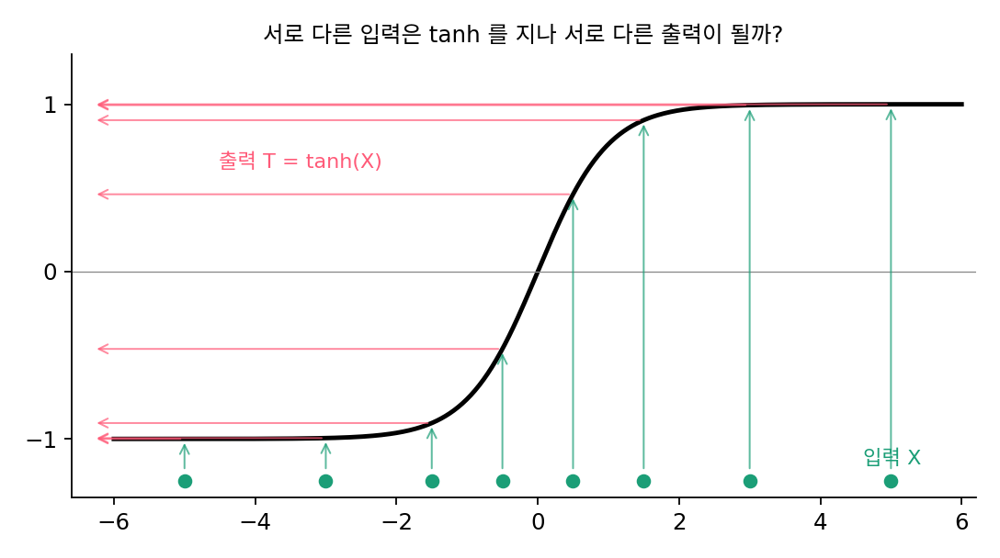
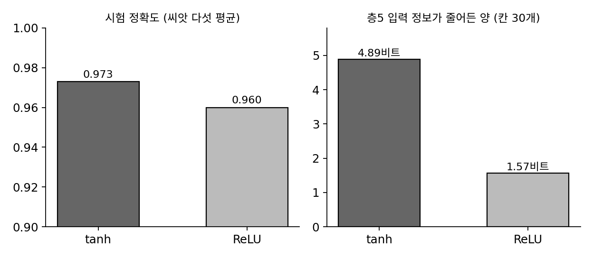

정보 평면: 압축 단계는 있었나
정보 병목은 표현 T 를 정보 평면의 두 축, 입력 정보 I(X;T) 와 라벨 정보 I(T;Y) 로 평가했다. 깊은 신경망의 층 하나하나도 입력을 받아 만든 표현이므로, 학습이 진행되는 동안 층들이 이 평면 위를 어떻게 움직이는지 그려 볼 수 있다. 학습이 정말 「라벨에 필요한 것만 남기고 버리는」 쪽으로 층을 움직이고, 그래서 신경망이 왜 잘 일반화하는지를 압축으로 설명할 수 있을까?
역사: 주장이 실험으로 반박되기까지
2017년 3월 슈워츠-지브(Ravid Shwartz-Ziv)와 티시비는 「정보로 깊은 신경망의 상자를 열기(Opening the Black Box of Deep Neural Networks via Information)」를 arXiv 에 올렸다. 그들은 작은 신경망을 학습시키며 층마다 두 상호정보량을 재어 정보 평면에 찍었고, 학습이 두 단계로 나뉜다고 주장했다. 처음에는 층들이 라벨 정보를 빠르게 얻는 「맞추기」 단계, 학습 오차가 작아진 뒤에는 입력 정보를 버리는 「압축」 단계다. 초록에는 학습 시간 대부분이 압축에 쓰이고, 다 배운 층은 정보 병목의 경계에 가까이 놓인다고 적혀 있다. 압축이 일반화를 낳는다는 이 그림은 큰 관심을 끌었다.
반론은 이듬해 나왔다. 색스(Andrew Saxe)와 동료 여섯 명은 「깊은 학습의 정보 병목 이론에 대하여(On the Information Bottleneck Theory of Deep Learning)」(ICLR 2018)에서 같은 실험을 조건을 바꿔 가며 다시 했다. 압축 단계는 tanh 처럼 양쪽 끝에서 납작해지는 활성화 함수에서는 나타나지만, ReLU 처럼 한쪽만 납작해지는 함수나 선형 신경망에서는 나타나지 않았다. 압축하지 않는 신경망도 잘 일반화했고, 압축하는 신경망이 늘 더 잘 일반화하지도 않았다. 압축이 확률적 경사하강의 무작위성 때문이라는 설명도, 묶음 전체로 계산하는 경사하강에서 같은 결과가 나와 받아들이기 어려워졌다. 다만 입력에 라벨과 상관있는 정보와 상관없는 정보가 섞여 있으면, 층은 상관없는 정보를 버리기는 했다. 다만 그 버림은 맞추기 단계 뒤에 따로 오지 않고 맞추기와 함께 일어났다.


층마다 상호정보량을 재서 점으로 찍으면 끝나는 실험 같은데요. 그게 왜 1년 만에 뒤집혔어요?

층의 출력은 입력이 정해지면 하나로 정해지는 연속인 값이에요. 그런 층의 I(X;T) 를 무엇으로 잴까요?

음, 입력마다 출력이 조금씩이라도 다르면 늘 최대가 나올 텐데… 그래서 출력을 칸으로 나눠 센 거네요. 그럼 칸 크기에 따라 값이 달라지겠어요.
그래요. 정해진 함수인 층에서 잣대에 흔들리지 않는 상호정보량을 재는 방법은 그때도 없었고, 지금도 잣대를 먼저 골라야 해요. 반박하려면 활성화 함수 같은 조건 하나만 바꿔 같은 실험을 다시 돌려 봐야 했고요.

처음 그림이 너무 깔끔해서, 다른 조건에서도 그런지 의심해 보기가 오히려 어려웠겠네요.

그럼 우리도 작은 신경망으로 활성화 함수만 바꿔 돌려 보면, 압축이 어디서 나오는지 보이지 않을까요?
열두 자리 입력을 tanh 와 ReLU 로
두 논문의 실험을 이 책에서 작게 다시 해 보자(설정은 이 책이 정했다. 계산은 s5_plane.py). 입력은 0과 1로 된 열두 자리의 모든 조합 4,096개이고, 라벨은 자리들의 가중합과 몇 쌍의 곱으로 정한 규칙이 반반으로 나뉘게 지었다. 신경망은 12 → 10 → 7 → 5 → 4 → 3 → 2 로 좁아지고, 85% 로 학습하고 15% 로 시험한다. 활성화 함수만 tanh 와 ReLU 로 바꿔 씨앗 다섯 개씩 6,000스텝 학습시키며, 층의 출력을 30칸으로 나눠 상호정보량을 잰다.
마지막 숨은 층(층5, 뉴런 셋)을 보자. tanh 신경망의 I(X;T) 는 처음 2.63비트에서 학습 정확도가 79% 쯤인 230스텝에 6.31비트까지 오른 뒤, 6,000스텝에는 1.47비트로 내려간다. 씨앗마다 최댓값에서 끝값까지 평균 4.89비트가 줄었고, 그사이 라벨 정보 I(T;Y) 는 0.98 까지 올라 머문다. 입력 정보가 오르다가 내려가는 모습이 슈워츠-지브·티시비의 「맞추기 뒤 압축」 주장과 맞는다. ReLU 신경망은 같은 층이 230스텝에 5.31비트로 오른 뒤 4.38비트에 머물렀고, 씨앗마다 줄어든 양은 평균 1.57비트였다. 활성화 함수 하나를 바꿨을 뿐인데 압축의 크기가 세 배 넘게 달라졌다.

이렇게 학습 중인 신경망의 층을 (I(X;T), I(T;Y)) 평면 위의 점으로 찍어 그 자취를 보는 그림을 정보 평면 (층이 가진 입력 정보와 라벨 정보를 두 축으로 한 그림, information plane)이라 한다.
그런데 이 숫자들은 무엇을 잰 것일까? 신경망은 정해진 함수라서, 입력 4,096개가 서로 다른 출력을 내기만 하면 I(X;T) 는 log₂ 4,096 = 12비트다. 「줄었다」는 것은 서로 다른 입력이 30칸으로 나눈 같은 칸에 들어갔다는 뜻이다. 학습이 끝난 tanh 신경망 층5 를 칸 수를 바꿔 다시 재면 칸 10개에 1.09비트, 30개에 1.41비트, 1,000개에 2.53비트이고, 칸으로 나누지 않고 값이 조금이라도 다르면 다른 것으로 치면 10.36비트다(s5b_bins.py). tanh 출력의 92.2%가 절댓값 0.99 를 넘어 ±1 근처에 몰려 있었다. 양쪽 끝에서 납작해진 출력이 30칸의 맨 끝 칸들에 쌓인 것이 「압축」으로 보인 것이다. 같은 층을 ReLU 로 학습시키면 칸 30개에 5.33비트, 칸 없이 12.00비트였다.
ML에서: 무엇이 남았나
정보 병목의 압축 단계는 신경망이 왜 잘 일반화하는지에 대한 매력적인 설명이었지만, 지금은 「활성화 함수와 재는 방법에 따라 나타나기도 하고 나타나지 않기도 하는 현상」으로 정리된다. 남은 교훈도 있다. 정해진 함수인 신경망의 층에서 I(X;T) 를 재려면 칸 나누기나 노이즈 더하기 같은 잣대를 먼저 골라야 하고, 결론이 그 잣대에 따라 바뀔 수 있다. 이 책의 큰 물음 「압축은 이해인가」에서 정보 평면의 압축 단계는 반론까지 함께 들어야 하는 약한 고리다.
문제 10. 눈금이 다른 자
반 학생 30명의 키(평균 170cm, 표준편차 6cm)를 잰다. 30명 가운데 한 명을 무작위로 골라 그 학생의 「잰 키」를 알려 줄 때 드는 비트를, 잰 값들의 엔트로피로 계산한다. 눈금이 10cm 인 자로 재면 1.18비트, 1cm 인 자로 재면 3.79비트, 0.1mm 인 자로 재면 4.91비트가 나왔다. (가) 학생들은 그대로인데 왜 비트가 달라지는가? (나) 4.91비트는 어디서 멈춘 값인가?


학생들은 그대로니까 달라진 건 자뿐이에요. 10cm 자로 재면 168cm 학생과 171cm 학생이 둘 다 170 눈금에 가까워서 같은 키로 적혀요.
세어 보니 서로 다른 값이 10cm 자로는 3가지, 1cm 자로는 16가지예요. 가짓수가 적으니 엔트로피도 작게 나오는 거고요.
(나)는요?

4.91비트면… log₂ 30 = 4.91 이네요. 0.1mm 자로 재면 30명이 모두 다른 값이 돼서, 그 뒤로는 자를 아무리 정밀하게 해도 더 늘 수가 없어요.
30명 가운데 누구인지를 가리는 정보가 끝이니까.

그래요. 엔트로피가 작게 나왔다고 학생들이 비슷한 건 아니에요. 자의 눈금 간격이 넓어서 서로 다른 학생을 한 칸에 모은 것일 수 있어요.

정보 평면 실험에서 층의 출력을 30칸으로 나눈 것도 이 자랑 같네요. 칸 간격이 넓으면 서로 다른 입력이 한 칸에 모여서 비트가 작게 나와요.

배달 앱이 별점을 정수로만 보여 주면 웬만한 가게가 다 별 넷이라 비슷해 보이잖아요. 가게들이 비슷해서가 아니라 칸이 다섯뿐이라서요.
문제 11. 거꾸로 되돌릴 수 있는 함수
서로 다른 입력 4,096개가 고르게 나오고, 표현 T = f(X) 는 정해진 함수다. (가) f 가 서로 다른 입력에 늘 서로 다른 값을 준다면 I(X;T) 는? (나) tanh 는 실수에서 거꾸로 되돌릴 수 있는 함수다. tanh 층을 하나 지나면 I(X;T) 가 줄어들 수 있는가? (다) 학습이 끝난 tanh 신경망 층5 를 칸 없이 쟀더니 12비트가 아니라 10.36비트였다. 어디서 줄었는가?

(가)는 T 를 보면 입력을 하나로 알 수 있으니까 I(X;T) = H(X) = log₂ 4,096 = 12비트요.
(나)는 tanh 가 거꾸로 되돌릴 수 있으니까 서로 다른 값은 서로 다른 값으로 가. 그럼 줄어들 수 없어. 그런데 (다)에서는 줄었네.
실수에서는 그래요. 컴퓨터는 tanh 의 출력을 무엇으로 저장하죠?
32비트 부동소수점이요.
1 에 아주 가까운 tanh 값을 float32 에 담으면요? tanh(10) 과 tanh(12) 를 넣어 볼까요?
아, 둘 다 1 에 너무 가까워서 float32 로는 똑같이 1.0 이 되겠네요. 실수로는 다른 값인데 저장하면 같은 값이에요.
그러면 10.36비트로 줄어든 것도 결국 아주 촘촘한 칸 나누기 때문이네. 칸이 30개든 float32 의 칸이든, 납작한 끝에 출력이 몰리면 같은 칸에 들어가는 입력이 생겨.

그래요. 정해진 함수의 층에서 「입력 정보를 버린다」는 말은 어떤 잣대로 쟀는지를 함께 말해야 뜻이 생겨요.

단사 함수는 집합의 크기를 줄이지 않지만, 컴퓨터의 수는 유한 집합이라 실수에서 단사인 함수도 저장하고 나면 단사가 아닐 수 있는 거네요.
문제 12. 압축한 쪽이 더 잘 일반화했다
위 실험에서 6,000스텝 학습한 뒤 시험 정확도는 tanh 신경망이 0.973, ReLU 신경망이 0.960 이었다(씨앗 다섯의 평균). tanh 쪽이 칸 30개로 잰 압축도 컸다. 「압축이 일반화를 낳는다」는 증거로 쓸 수 있는가?

tanh 가 더 압축했고 시험 정확도도 높으니까 맞는 것 같은데요. 1.3%p 차이면 작지 않아요.
두 신경망 사이에 다른 점이 압축 하나뿐인가요?
아니요, 활성화 함수 자체가 달라요. tanh 가 이 규칙을 맞히기에 더 알맞은 함수였을 수도 있겠네요. 압축 말고 다른 이유로요.
그리고 압축은 칸 30개로 쟀을 때만 큰 차이가 났어. 칸 없이 재면 tanh 도 10.36비트라 거의 압축하지 않았고. 잣대에 따라 「압축했다」가 바뀌는 걸로 인과를 말하기는 어려워.
그래요. 색스와 동료들이 한 일이 그거였어요. 압축하지 않는 신경망도 잘 일반화하고, 압축하는 신경망이 늘 더 잘하지는 않는 예를 보였죠. 상관이 있어도 인과는 따로 따져야 해요.
인과를 보려면 활성화 함수는 그대로 두고 압축만 바꾼 두 신경망을 견줘야겠네요. 그런 실험을 짜기가 생각보다 어려워요.
밤새운 날 시험을 잘 봤다고 밤새우는 게 비결은 아니잖아요. 그날 시험이 쉬웠을 수도 있고요.